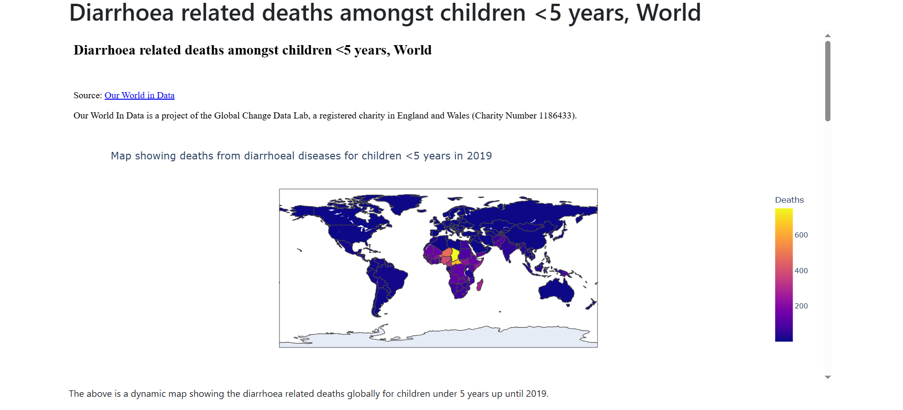

Chapter 8: Another Django app
Adding another app
Now that we had practice with creating our australia app that shows the public sanitation facilities in Australia, and even rendered a mini-webpage of our Dash app in it, let's create a second app to concretize our Django skills.
The app we shall create shall render another Dash app of our Diarrhoea related deaths among children under 5 years dash app. Don't worry about the fanaticism with sanitation issues, it's just that the topic is close to our heart.
Create the app in Django
We want to create an app called world that shows diarrhoea related deaths among children.
The process of creating an app in Django is simple, simply add the name to your app in the command python manage.py startapp <your-app-name>. For our world app, it will be:
python3 manage.py startapp world
This will create a folder called world with the following directories:
world
├── apps.py
├── views.py
├── migrations
│ └── __init__.py
├── __init__.py
├── admin.py
├── tests.py
└── models.py
Let's have a refresher of what each file does:
__init__.py- tells Python to treat the directory as a Python package.admin.py- contains settings for the Django admin pages.apps.py- contains settings for the application configuration.models.py- contains a series of classes that Django’s ORM converts to database tables.tests.py- contains test classes.views.py- contains functions and classes that handle what data is displayed in the HTML templates.
Install the app in your project
Now let's install the app within our sanitation project. Go to the settings.py file under the sanitation directory.
Add the following up to the INSTALLED_APPS key.
INSTALLED_APPS = [
# my apps
'australia.apps.AustraliaConfig',
'world.apps.WorldConfig',
'django.contrib.admin',
'django.contrib.auth',
'django.contrib.contenttypes',
'django.contrib.sessions',
'django.contrib.messages',
'django.contrib.staticfiles',
]
By doing this, we make the Django configuration know that an app called world exists.
The next step is to create a view to display some content on this app's webpage.
Create a view
A view in Django is a collection of functions or classes inside the views.py file in an app's directory. Each function or class handles the logic that the app processes each time the user visits a different URL.
Navigate to the views.py file in the world directory and add the following code:
# Create your views here.
def dysentry(request):
return render(request, "world/dysentry.html", {})
In this piece of code, you define a view function named dysentry(). When you call this function, it’ll render an HTML file named dysentry.html.
A view function takes at least one argument, request. The request object is created whenever a page loads, and it contains metadata about the page request.
Now that you’ve created the view function, you need to create the HTML template to display to the user. The render() function looks for HTML templates inside a directory called templates/ in your app directory. Since templates of different apps can have the same names, it’s also best practice to add a subdirectory with the app’s name inside the templates/ directory.
Create the template/ directory, a subdirectory named world/, and subsequently a file named dysentry.html inside it:
Content for the webpage
Open the dysentry.html file. Since we already created a base template and even have a skeleton of our australia app, we shall copy everything from the sanitation.html file save for the title name and the url in the iframe tag.
{% extends "base.html" %}
{% block base_content %}
<h1>Diarrhoea related deaths amongst children <5 years, World</h1>
<div>
<iframe src="https://data-visualization-for-diarrhoea-deaths.onrender.com/"
width="100%" height="600px">
</iframe>
</div>
<div>
<p>The above is a dynamic map showing the diarrhoea
related deaths globally for children under 5 years up until 2019.
</p>
</div>
{% endblock base_content %}
Now that you’ve created the template that your dysentry view function expects, you need to tell Django when to serve the view. For this, you need to create a new route to the project.
Add a route
First, you need to hook up an URL so that you can visit the page that you’ve just created. Your sanitation/ folder contains a file named urls.py. In this file, you’ll include a URL configuration for the world app:
By adding another path() to urlpatterns, you create a new route for your Django sanitation project. Whenever you visit the root path of your project, the routes of the pages application will load. The world.urls module doesn’t exist yet, so you’ll need to create it by adding a urls.py file under the world directory.
world
├── apps.py
├── templates
│ └── world
│ └── dysentry.html
├── views.py
├── migrations
│ └── __init__.py
├── __init__.py
├── urls.py
├── admin.py
├── tests.py
└── models.py
Inside the world/urls.py file, add the following:
from django.urls import path
from world import views
urlpatterns = [
path("dysentry", views.dysentry, name="dysentry"),
]
We define a list of URL patterns that correspond to the various view functions, which in our case is the dysentry view function.
View the app
To view our app, run python3 manage.py runserver.
